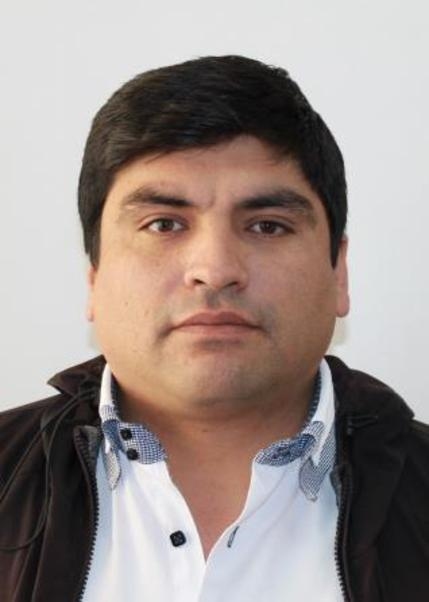
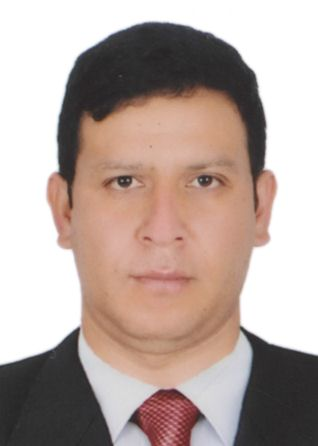

Candidato del Movimiento Político Regional Cajamarca Renace a la Alcaldía Distrital de Lajas (Chota, Cajamarca) · Elecciones del 4 de octubre de 2026
Teniente alcalde: Gilmer Villalobos González
«¡Mi Lajas, juntos sí podemos!»
El que no mide, no gobierna: venimos con los números de Lajas en la mano.
Versión mitin (9 min) y píldoras de 60 s, con cada cifra respaldada por su fuente oficial: pobreza, desagüe, desnutrición, migración, educación.
Los ejes del Plan de Gobierno 2027-2030 de Cajamarca Renace con el dato que los sustenta y la competencia legal del alcalde distrital.
Mapa interactivo de los 19 distritos de la provincia de Chota: pobreza, agua, desagüe, nutrición, escuelas, electores — y los 5 locales de votación y 49 centros poblados de Lajas.
Discurso en PDF, Plan de Gobierno inscrito en el JNE, ficha de 42 datos con fuente y bases por distrito y centro poblado.
Nacido y domiciliado en Lajas. Contador público (Universidad Nacional Pedro Ruiz Gallo) y magíster en Gestión Pública. Contador de la Municipalidad Provincial de Chota desde 2005; Director de Administración de la Subregión Chota (2022-2023). Transportista y operador de maquinaria. (DJHV – JNE)

Nacido y domiciliado en Lajas. Bachiller en Educación (Universidad Nacional de Cajamarca). Docente en el Colegio de Alto Rendimiento de Amazonas (2021-2023), IE Toribio Casanova de Cutervo, IE Juan Z. Montenegro y IE José del Carmen Cabrejos Mejía (2023-2026). (DJHV – JNE)
Hoy 23 de cada 100 niños lajeños menores de 5 años tienen desnutrición crónica (SIEN 2021); el Perú está en 15 %. Padrón nominal, promotoras por comunidad, Vaso de Leche con leche fresca local y convenio con la Red de Salud de Chota.
Hoy 80 de cada 100 viviendas no tienen desagüe por red y 36 no tienen agua por red (Censo 2017). Sistemas de agua y desagüe con biodigestores (plan de gobierno) y Área Técnica Municipal con presupuesto.
La municipalidad ejecuta el 89 % de su presupuesto de proyectos (MEF 2021). Compromiso: ni un sol devuelto, informe anual de gestión y portal de transparencia al día (plan de gobierno).
Sitio de trabajo del candidato y su equipo. Se actualiza con cada documento nuevo. Última actualización: 18 de setiembre de 2026.